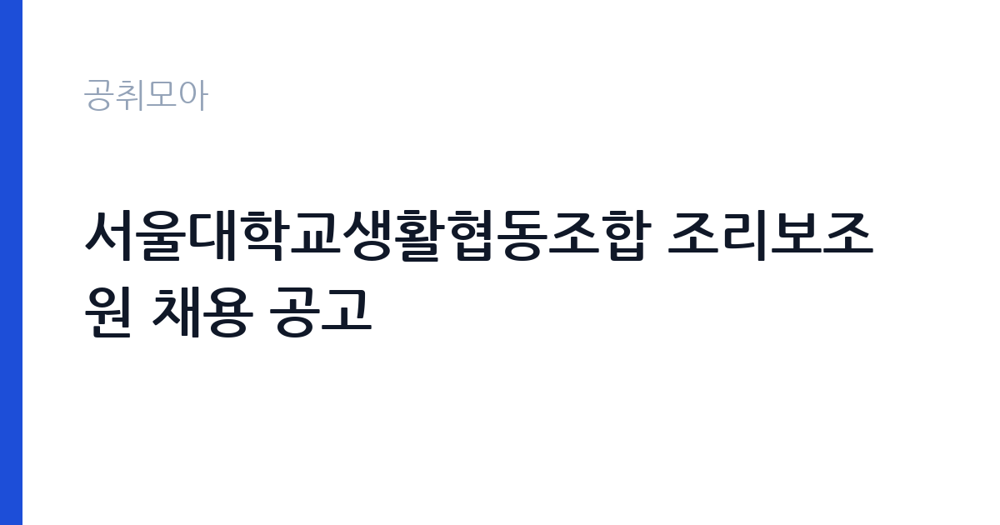

[국가기관] 서울대학교생활협동조합 조리보조원 채용 공고
서울대학교 기타기관 · 서울 · 마감 2026-11-25 (D-28) · 출처 나라일터

한눈에 보는 모집 조건
| 기관 | 서울대학교 기타기관 |
|---|---|
| 공고명 | 서울대학교생활협동조합 조리보조원 채용 공고 |
| 고용형태 | 정규직 |
| 근무지 | 서울 |
| 게시일 | 2026-10-28 |
| 마감일 | 2026-11-25 (D-28) |
지원자격, 이렇게 읽으세요
- 조리보조원 0명
- 접수 ~2026-11-25 마감
- 세부 조건은 원문 공고문 확인
정규직 채용은 기간의 정함이 없는 근로계약을 전제로 합니다. 수습 기간을 두고 평가한 뒤 정규직으로 확정하는 절차가 일반적이며 기관의 인사 규정과 임금 체계를 적용받습니다. 이번 공고는 서울대학교 기타기관이 직접 진행하는 자체 전형입니다. 조리 직무는 조리사 자격증 소지자를 요구하거나 우대하는 경우가 많습니다. 최근에는 위생교육 이수와 건강진단 결과를 제출해야 하므로 채용 전 건강 상태를 준비해야 합니다. 대체인력이나 단기 계약으로 채용되면 근무 기간이 명시되며, 기존 직원의 휴직이나 출산휴가 기간과 맞물리는 경우가 흔합니다. 급식 인원과 조리 인력이 정해져 있어 혼자서 많은 양을 처리해야 할 수 있습니다. 제출서류는 공고문에 적힌 순서대로 정리하면 담당자가 확인하기 쉽습니다. 자격증은 유효 기간과 등록 상태를 확인해야 합니다. 갱신이 필요한 자격이라면 갱신 여부를 먼저 점검하십시오. 자격 취득 예정자는 채용 공고의 예정자 허용 조항을 먼저 확인해야 합니다. 조항이 없으면 지원 자체가 반려될 수 있습니다.
이 공고의 포인트
이 건은 서울대학교 기타기관가 같은 시기에 낸 2개 모집분야 가운데 조리·급식 직무입니다. 다른 직무 공고와 요건이 다르므로 지원 전에 모집분야 표를 대조해야 합니다. 이 공고의 첫 번째 포인트는 고용 형태입니다. 수습 기간 평가를 통과하면 기간의 정함이 없는 신분이 되어 고용이 안정됩니다. 두 번째는 업무 범위가 명확하다는 점입니다. 조리·급식 직무로 채용되므로 배치 이후 담당 업무가 크게 흔들리지 않습니다. 세 번째는 근무지입니다. 서울 지역 근무로 접근성은 좋지만 그만큼 지원자가 몰리는 지역이므로 경쟁률을 넉넉히 잡아야 합니다. 채용 규모가 크지 않아 면접 비중이 높은 전형이 될 가능성이 있습니다. 같은 직무로 함께 올라온 공고 가운데 접수 마감이 가장 늦은 편이라 준비 시간을 상대적으로 확보할 수 있습니다. 선발 인원은 공고문에 명시되어 있으니 모집분야 항목을 함께 확인하십시오.
전형은 어떻게 진행되나
채용 절차는 공고문에 안내된 순서대로 진행되며, 서류 접수 마감 후에는 추가 접수나 서류 보완이 이뤄지지 않는 것이 원칙입니다. 서류심사에서는 응시자격과 제출서류의 형식 요건을 기계적으로 확인하므로, 경력 증명서의 기간과 직무 내용이 공고의 요건과 정확히 맞아야 합니다. 면접은 지원자 수에 따라 집단면접과 개별면접으로 나뉘고, 직무 관련 질문과 상황 대응 질문이 함께 나옵니다. 합격자 발표는 개별 통보 또는 홈페이지 게시로 이뤄지며 이후 임용 절차가 진행됩니다. 서류 단계에서 요건을 충족하지 못하면 이후 전형을 준비할 기회가 없으므로, 제출 전 요건 대조를 한 번 더 하는 것이 좋습니다.
원문에서 확인한 전형 방식
[ 서울대학교생활협동조합 조리보조원 채용 공고] 서울대학교생활협동조합에서는 서울대학교 내에서 구내식당 조리 보조 업무를 담당할 역량 있는 조리보조원을 채용하고자 하오니 많은 관심 바랍니다. 2026년 10월 28일 서울대학교생활협동조합이사장 1. 채용분야 및 인원 * 채용 분야: 조리보조원 * 인원: 0명 * 자격 요건 - 단체급식 특성상 중량물 운반 및 배식, 세척, 조리보조 업무가 가능한 자 - 국가공무원법 제33조에 규정된 결격사유에 해당되지 않으며, 공무원 임용시험령 등 관계법령에 의하여 응시자격을 정지당하지 아니한 자 - 남자의 경우 병역을 필하였거나 면제된 자 2. 전형 방법 ○ 1차(서류전형): 제출된 서류에 의한 평가(합격자 개별 통보) ○ 2차(면접): 면접 3. 신분 및 처우 ○ 신분: 정규직 * 연봉: 약 33,500,000원 이상, 주 40시간 근무 기준이며 호봉제 적용 ○ 정규직 전환 후 처우 * 명절휴가비, 성과급 등 지급 * 맞춤형복지비, 종합건강검진 지원(입사 후 1년 경과 다음 연도부터 적용) ○ 시용 기간: 채용 후 3개월 * 시용 기간 중 보수: 2,548,000원/월 4. 제출 서류 ○ 지원서(*붙임 양식 참조) ○ 자기소
이런 분께 추천해요
- 조리사 자격 또는 급식 조리 경력이 있는 분
- 위생 수칙을 습관적으로 지키는 분
- 이른 출근과 정해진 배식 시간을 지킬 수 있는 분
지원 전 체크리스트
- 응시자격 요건과 경력 기준을 충족하는가 — 경력은 증명서로 입증해야 합니다
- 수습 기간과 정규직 전환 조건을 확인했는가
- 제출서류 목록을 모두 준비했는가 — 누락 시 서류 단계에서 탈락합니다
- 접수 마감 2026-11-25 이전에 접수 방식을 확인해 제출했는가
모집 일정과 제출 타이밍
접수 마감은 2026-11-25이고 공고는 2026-10-28에 게시되었습니다. 준비 기간 28일 안에 서류 작성, 증빙 발급, 접수를 모두 마쳐야 하므로 주말을 포함해 일정을 미리 나누는 것이 좋습니다. 특히 경력 기술서나 직무수행계획서를 요구하는 공고는 작성에 시간이 걸리므로 첫날 초안을 잡으십시오. 서류 합격자 발표와 면접 사이 간격이 짧은 경우가 많아 면접 예상 질문은 서류 제출 전에 정리해 두는 편이 유리합니다. 마감 직전에는 접속이 몰리므로 여유를 두고 제출하십시오. 마감 이후에는 어떤 사유로도 접수가 인정되지 않으므로 하루 전 제출을 목표로 하십시오.
직무 이해하기: 국가기관
교육기관은 학교 교육과 교원 연수, 교육 행정을 담당합니다. 교육청은 관내 학교를 지원하고, 대학은 학사와 연구, 학생 지원 업무를 운영합니다. 예산과 인사 규정이 교육부 지침과 자체 규정을 함께 따르므로 절차가 엄격합니다. 조리 업무는 급식 인원에 맞춰 식단을 준비하고 배식하는 일입니다. 재료 검수와 손질, 조리, 배식, 세척, 잔반 처리까지 하루 주기가 정해져 있습니다. 위생 관리 기준에 따라 냉장고 온도와 조리 기구 소독 상태를 기록하고 식중독 예방 수칙을 지켜야 합니다. 학교나 복지시설, 부대 급식소처럼 대상이 정해진 곳에서는 알레르기 유발 식품 표시와 식단표 관리도 업무에 포함됩니다. 아침과 점심 시간에 맞춰 이른 출근이 필요한 경우가 많습니다. 근무조는 사업 일정과 기상 상황에 맞춰 편성되므로 면접에서 배치 구역을 확인하는 것이 좋습니다. 업무 강도와 근무 시간대는 부서 배치에 따라 달라지므로 면접에서 확인하는 것이 가장 정확합니다. 원문에 '채용분야 및 인원 * 채용 분야: 조리보조원 * 인원: 0명 * 자격 요건 - 단체급식 특성상 중량물 운반 및 배식, 세척, 조리보조 업무가 가능한 자 - 국'라는 조건이 명시되어 있습니다.
자기소개서 작성 팁
조리 지원서는 위생과 안전에 대한 습관을 증명하는 데 집중하십시오. 이전 근무지에서 지킨 위생 수칙, 대량 조리 경험, 식단 관리 경험을 구체적으로 쓰십시오. 인원이 적은 급식소에서는 혼자 여러 업무를 처리해야 하므로 동시에 여러 작업을 진행한 경험이 소재가 됩니다. 장기 근무 의사와 이른 출근 가능 여부도 함께 밝히십시오. 문항별 글자 수 제한을 먼저 확인하고, 각 문항의 첫 문장에 결론을 배치하는 방식이 읽기 쉽습니다. 지원 동기는 기관의 어떤 사업에 기여하겠다는 한 문장으로 시작하고, 이어서 본인의 경험을 근거로 붙이십시오. 감점을 피하려면 다른 기관에 보낼 수 있는 범용 문장을 그대로 쓰지 않는 것이 중요합니다. 기관 이름과 사업명이 문장 안에 자연스럽게 들어가야 준비도가 드러납니다.
면접 준비 포인트
면접에서는 위생 관리와 팀 협업 태도를 확인합니다. 조리 중 위생 사고를 예방하기 위해 어떤 절차를 지키는지, 식단이 갑자기 바뀌면 어떻게 대응하는지, 동료와 역할이 겹칠 때 어떻게 조율하는지를 묻습니다. 조리 자격과 경력은 서류에서 확인되므로 면접에서는 실제 작업 속도와 안전 관리 방식을 보여주는 것이 좋습니다. 직무 특성상 체력이나 근무 시간에 대한 질문이 나올 수 있으므로 솔직하게 답하고 관리 계획을 함께 제시하십시오. 마지막 질문 시간에는 근무 조건에 대한 확인 사항을 한 가지 정도 준비해 가면 성실성이 드러납니다.
급여·근무조건 읽는 법
서울대학교 기타기관의 구체적인 보수 수치는 이 공고 원문의 처우 항목과 보수표에서 확인해야 합니다. 공시 자료로 확인되지 않은 금액은 이 글에서 추정해 제시하지 않습니다. 알리오 2025년 결산 공시 기준 공공기관 전체 일반정규직 1인당 평균보수는 7,376만 9천원, 신입사원 평균초임은 4,031만 6천원입니다(무기계약직 미포함). 조리 직무의 보수는 기관의 직종별 임금표를 따르며, 기본급에 정액급식비와 명절휴가비, 초과근무수당이 더해집니다. 조리사 자격이나 경력에 따라 호봉이 달라지는 경우가 있으므로 경력을 증빙할 수 있는 자료를 준비하면 유리합니다. 실제 금액은 공고문의 처우 항목에서 확인하십시오. 대체인력 채용은 계약 기간이 짧아 총 급여 규모도 함께 따져야 합니다. 2026년 적용 최저임금은 시급 10,320원, 월 환산 2,156,880원(주 40시간·209시간 기준)입니다. 고용노동부 고시 제2025-47호로 확정된 금액입니다. 공고문에 금액이 제시되지 않은 항목은 원문 보수표나 처우 설명에서 확인해야 하며 확인되지 않은 수치는 쓰지 않는 것이 원칙입니다. 비교할 때는 월 급여뿐 아니라 상여·명절휴가비·복지포인트·초과근무수당까지 포함한 연간 총액으로 계산하십시오. 기간제라면 계약 기간 동안의 총액을, 무기계약이라면 호봉 상승과 정년까지의 누적 소득을 기준으로 판단하는 편이 정확합니다.
자주 묻는 질문
- 선발 인원은 몇 명인가요?
공고문의 모집분야 항목에 직종별 인원이 표로 제시되어 있습니다. 첨부된 공고문 원문에서 확인하십시오. - 근무지는 어디인가요?
서울 지역의 서울대학교 기타기관 소속 근무지입니다. 세부 주소와 출퇴근 조건은 원문 공고문에서 확인할 수 있습니다. - 보수는 얼마인가요?
채용 신분(정규직)과 기관 임금 규정에 따라 정해지며 구체적인 금액은 공고문 처우 항목에 제시됩니다. 금액이 공개되지 않은 경우에는 원문의 보수표를 확인하십시오.
함께 보면 좋은 공고
[국가기관] 2026년 제주세관 공무직(청소원, 여행자통관지원요원) 채용 공고 — 마감 2026-11-05[국가기관] 2026년 제4회 기상청 공무원 경력경쟁채용시험 공고 — 마감 2026-11-09[국가기관] 공주교육대학교 국가직공무원 행정9급 전입 희망자 모집 공고 — 마감 2026-11-10출처: 나라일터 공개정보를 바탕으로 공취모아가 정리한 안내글입니다. 모집 조건·일정은 변경될 수 있으니 지원 전 반드시 원문 공고문을 확인하세요. 본 글은 정보 제공용이며 합격을 보장하지 않습니다.